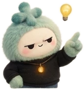

You shipped all week.
…and posted nothing.
What do you want to talk about?
Post
what do I even post?
Your commits already
wrote it, genius.
Meet DiffStory
Type one command.
It finds the lesson in your work.
…and drafts the post. You hit publish.
Idea card 1 of 4
Date-only ranges silently drop your morning commits
Score 8/10Confidence: High✓ Verified
Drafts only.
You post it.
Introducing
DiffStory
Stop asking what to post.
Your commits already wrote it.
A Claude Code skill
github.com/yuvraaj2002/DiffStory
You're welcome.
